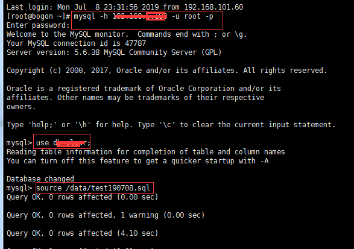

linux上执行mysql的脚本文件
我们测试过程中，经常需要执行升级脚本或导入生产测试数据，对于轻量的升级脚本可以直接在客户端工具中打开执行，但是对于文件内容比较大的.sql文件，比如几百M，几G的sql文件，直接拖到客户端工具打开执行，执行速度非常的慢，而且工具可能会直接卡死，甚至整个电脑都处于不可操作的状态，严重的影响工作效率，这个情况，我们可以在数据库服务器上通过命令的方式来执行sql文件， 执行速度快，且不影响客户端的操作，方法如下：
1、把需要执行的sql文件上传到数据库服务器指定，目录，如/data
2、通过linux客户端工具连接进入数据库服务器
3、连接数据库
# mysql -h IP -u root -p
（如）# mysql -h 192.168.101.100 -u root -p
连接成功后，输入密码
4、指定数据库
# use db;
5、执行脚本
# source /data/执行的sql文件
（如）# source /data/test190708.sql
具体操作如下图所示：

作者：simplesally
出处：https://www.cnblogs.com/simple1025/
说明：本文版权归作者和博客园共有，欢迎转载和提出建议，但未经作者同意必须保留此段声明，且在文章页面明显位置给出原文连接，否则保留追究法律责任的权利。

【推荐】天翼云新客特惠，云主机1核2G低至33.43元/年
· [WPF] 抄抄超强的苹果官网滚动文字特效实现
· MassTransit | .NET 分布式应用框架
· 查重原来是这样实现的啊！
· 从小白到架构师(2): 走向微服务
· 超强的苹果官网滚动文字特效实现
· 赛力斯：拟以自有资金不超过4亿元回购公司股份
· 特斯拉客服回应Model 3、Model Y降价：已下单未提车可选官网价
· 我做一年场控，想理解女主播的人生
· 韩版腾讯的一场大火，让韩国沦陷了整整4天
· 为什么美国没有李佳琦，中国容不下买手制？
» 更多新闻...